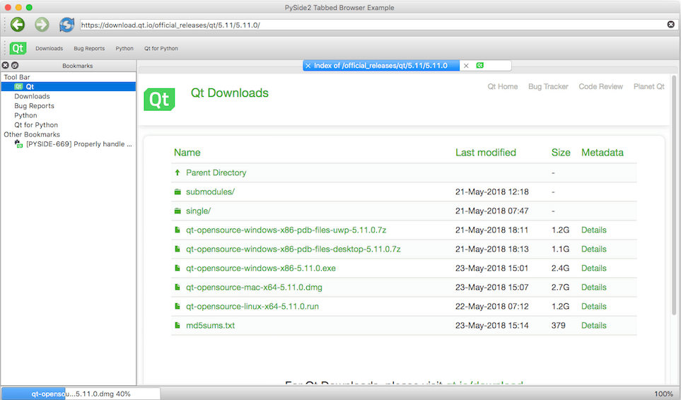

Web Browser Example¶
The example demonstrates the power and simplicity offered by Qt for Python to developers. It uses several PySide2 submodules to offer a fluid and modern-looking UI that is apt for a web browser. The application offers the following features:

- Tab-based browsing experience using QTabWidget.
- Download manager using a QProgressBar and QWebEngineDownloadItem.
- Bookmark manager using QTreeView.
The application’s code is organized in several parts for ease of maintenance. For example,
DownloadWidget provides a widget to track progress of a download item. In the following
sections, these different parts are discussed briefly to help you understand the Python code behind
them a little better.
BookmarkWidget or bookmarkwidget.py¶
This is a widget that docks to the left of the main window by default. It inherits QTreeView and loads a default set of bookmarks using a QStandardItemModel. The model is populated at startup for a JSON file, which is updated when you add or remove bookmarks from the tree view.
DownloadWidget or downloadwidget.py¶
This is a widget that tracks progress of the download item. It inherits QProgressBar to display progress of the QWebEngineDownloadItem instance, and offers a context-menu with actions such as Launch, Show in folder, Cancel, and Remove.
BrowserTabWidget or browsertabwidget.py¶
This is a widget that includes a QWebEngineView to enable viewing web pages. It docks to the right of BookmarkWidget in the main window.
MainWindow or main.py¶
This is the parent window that collates all the other widgets together to offer the complete package.
PySide2 WebEngineWidgets Example
-
class
main.MainWindow[source]¶ Provides the parent window that includes the BookmarkWidget, BrowserTabWidget, and a DownloadWidget, to offer the complete web browsing experience.
-
main.create_main_window()[source]¶ Creates a MainWindow using 75% of the available screen resolution.
-
main.create_main_window_with_browser()[source]¶ Creates a MainWindow with a tab that loads the www.qt.io webpage.
Try running the example to explore it further.
© 2018 The Qt Company Ltd. Documentation contributions included herein are the copyrights of their respective owners. The documentation provided herein is licensed under the terms of the GNU Free Documentation License version 1.3 as published by the Free Software Foundation. Qt and respective logos are trademarks of The Qt Company Ltd. in Finland and/or other countries worldwide. All other trademarks are property of their respective owners.